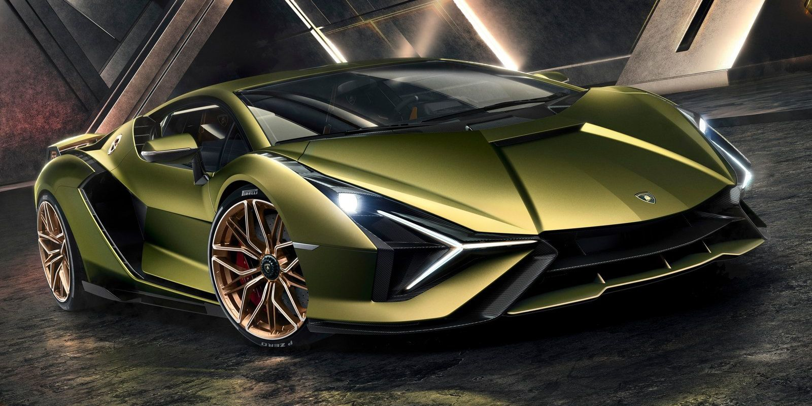
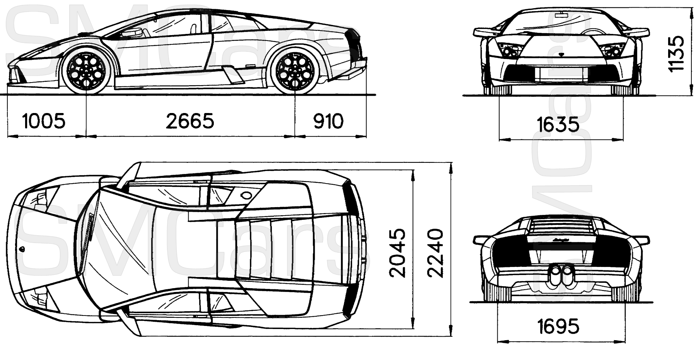
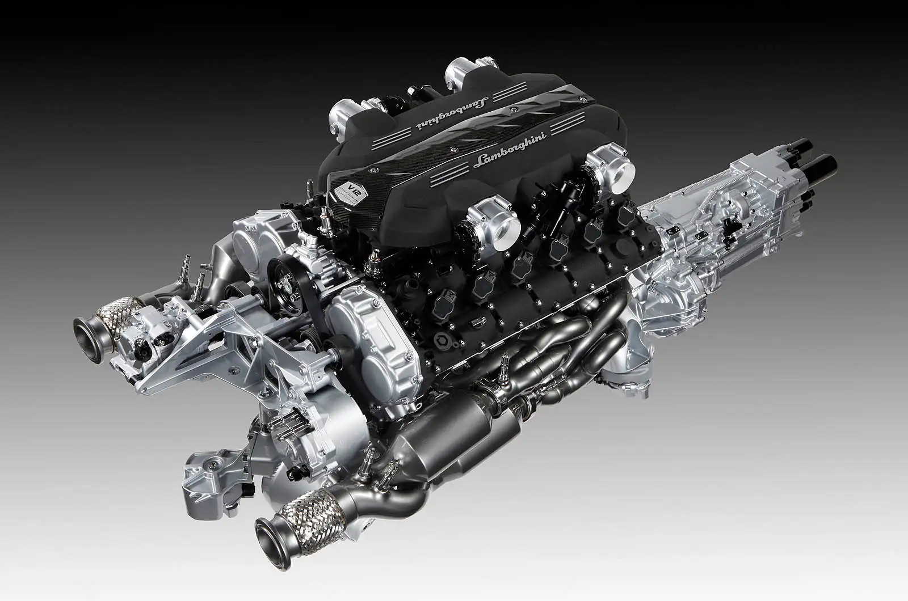
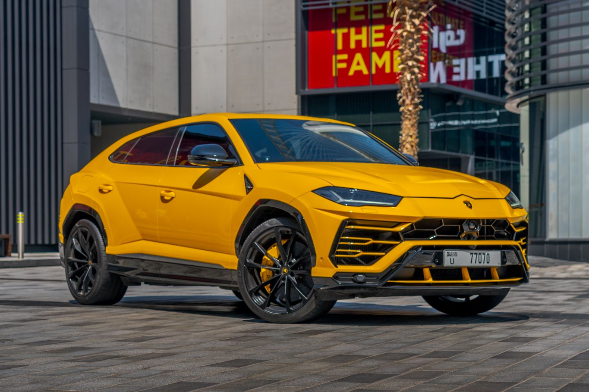

The fastest Lamborghini sticks firmly to the fantasy design philosophy of all super sports cars, with a powerful arrow-shaped front end that interacts with sharp lines and delicate surfaces. The entire design of the Lamborghini Veneno is positioned to provide optimum airflow and downforce. The front end serves as a large aerodynamic wing. The visual splitting of the rear fenders from the bodywork is a reference to the racing world and improves aerodynamic flow as well. The smooth bottom transitions into a large diffuser and massive four exhaust pipes to signify power and power. Large openings ventilate the engine compartment and direct air flow to the rear spoiler. The adjustable rear spoiler design is the product of motorsport experience and aerodynamic simulation.
Lamborghini's fastest power comes from the impressive L539's 6.5-liter V-12 engine, which has been upgraded here to produce a whopping 740 horsepower. The extra power - 691 hp - is found by widening the air intakes, allowing for higher revs, and by modifying the existing exhaust system. Power is channeled to all four wheels via a seven-speed, single-clutch ISR automatic transmission, a high-speed unit that shifts with precision especially when you select the track-ready Corsa setting. With these modifications, the top speed was increased to 356 km/h.
Weighing in at just 1490 kg, the car ensures nothing less than impressive performance. Even an impressive acceleration figure of 2.9 seconds cannot adequately describe this and the Veneno has exceptionally low wind resistance allowing it to reach a top speed of 356 km/h.
